Control Value Accessor
Like a Wormhole in Space for
Your Forms, Only More Useful!
Jennifer Wadella

Jennifer Wadella
@likeOMGitsFEDAY
- JavaScript Developer at Bitovi
- Community Organizer
- Kombucha brewin' crazy plant lady
What is a wormhole?
Wormhole
A theoretical structure of space-time envisioned as a tunnel connecting points that are separated in space and time.
The Control Value Accessor
Defines an interface that acts as a bridge between the Angular forms API and a native element in the DOM.
What can we do with this?
Implement this interface to create a custom form control directive that integrates with Angular forms.
Sounds Great!
How do I use it?

Let's build an app!
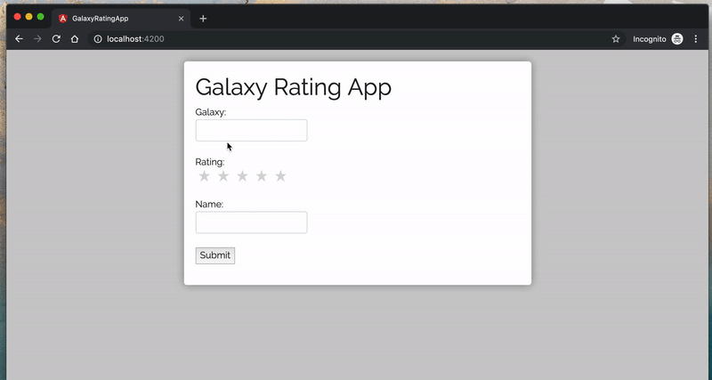Example Form Scenario
I have created custom components that I would like to act as form elements in my reactive form.
- A typeahead component that displays one value to the user,
but passes an id as it's form value - A star rating component that passes a rating number as it's form value
Reactive Forms Crash Course
- Reactive Form: a model-driven approach to handling form inputs whose values change over time.
- Form Control: basic form building block to create an input/radio/select/etc. Tracks the value and validation status.
- Form Group: a group of form controls.
- FormControlName: directive that ties form element to a formControl.
Our Reactive Form
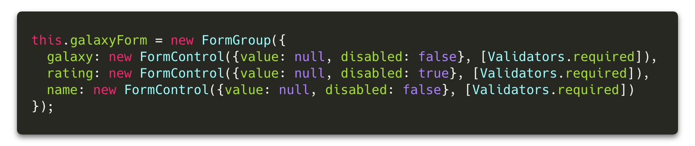Solution #1
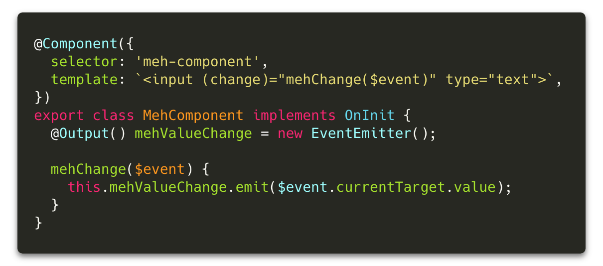parent component w/ form
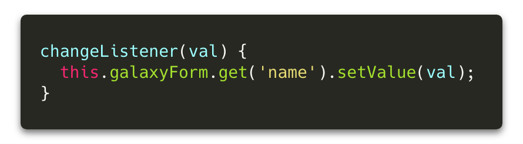pitfalls
- Managing additional methods for listening to change events
- Having to use additional method of .patchValue on form control
- Validation?!?!?!
Control Value Accessor Applied
CVA Interface

Typescript with Classes & Interfaces
Classes implementing interfaces must follow the structure described by the interface.
write Value
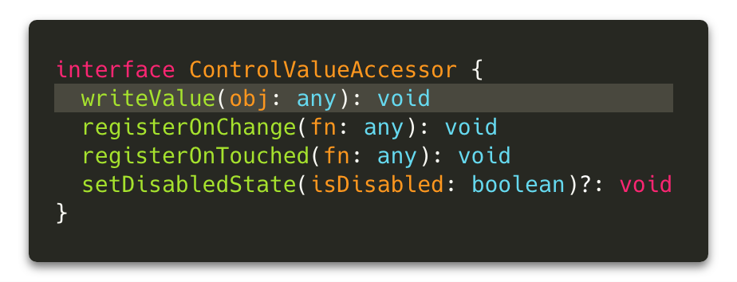Writes a new value to the element. This will be called when the FormControl is instantiated AND when patchValue or setValue is called.
register OnChange
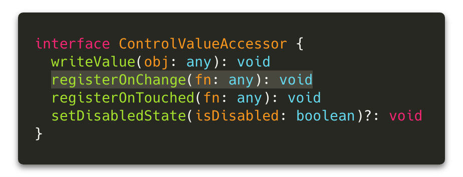Registers a callback function that is called when
the control's value changes in the UI.
register OnTouched
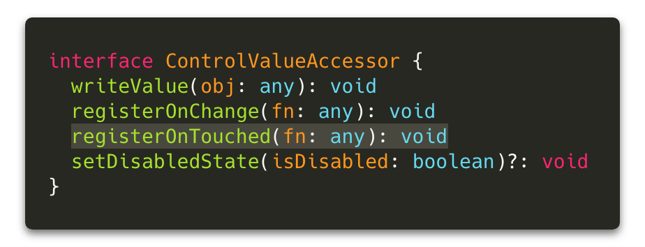Registers a callback function is called by the forms
API on initialization to update the form model on blur.
set Disabled State
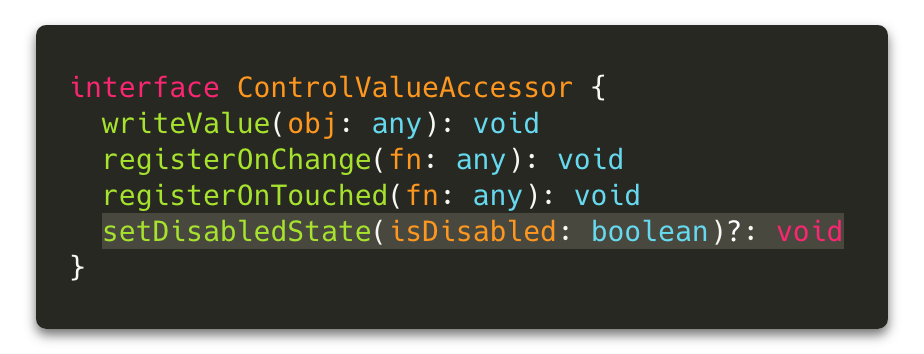Function that is called by the forms API when the control status changes to or from 'DISABLED'. This will be called when the FormControl is instantiated IF the disabled key is present AND when .enable() or .disable() is called.
Implementation
We need to register the NG_VALUE_ACCESSOR provider and implement the ControlValueAccessor methods.
The NG_VALUE_ACCESSOR is used to register the component as a provider for the controlValueAccessor, and because this will register the component early we'll need to use forwardRef to refer to it.
Basic CVA implementation
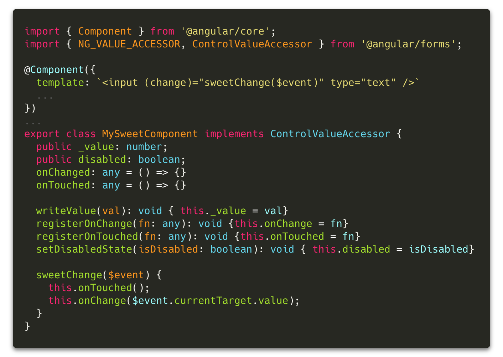In form markup
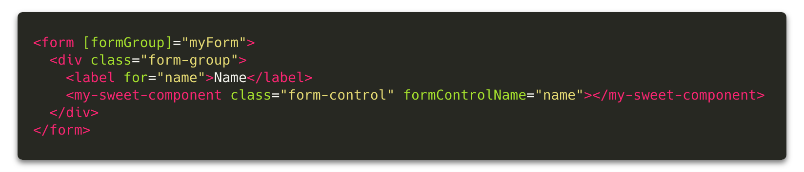same as ...
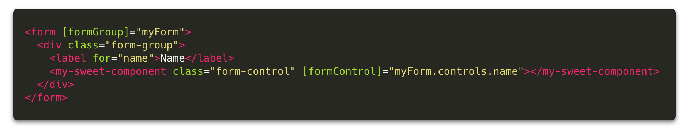Back to Our Original Problem
Using CVA in practice for typeahead and rating form controls

We want to display the 'name' value to our users and submit the 'id' value to our form
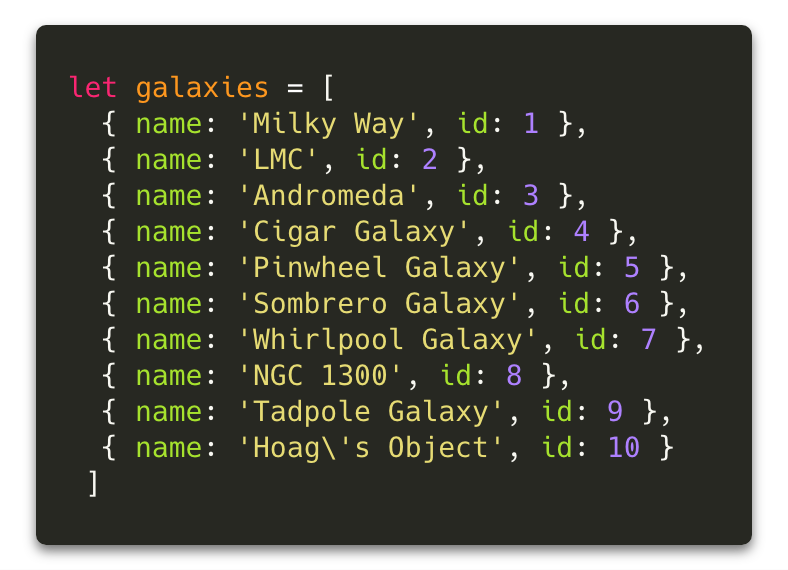Typeahead markup
(using ngx-bootstrap typeahead)
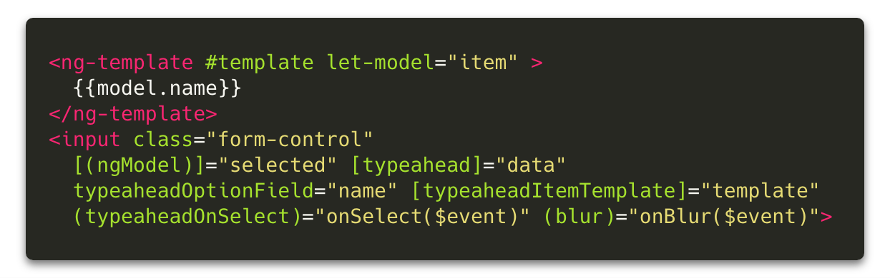Typeahead component
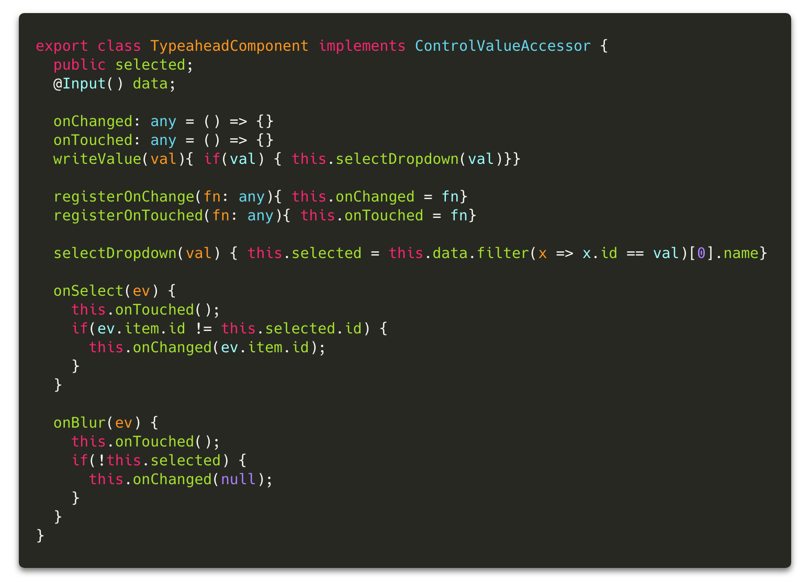Star Rating Markup
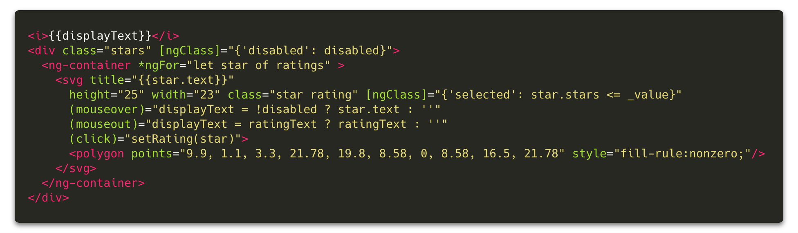Star Rating Component
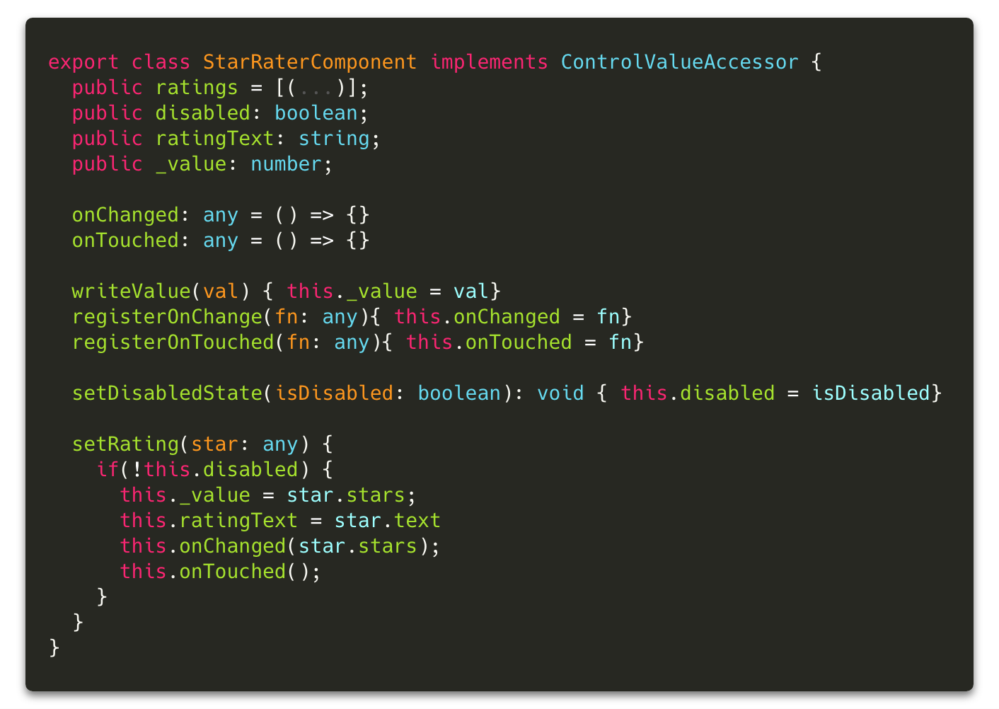Testing our CVA Components
Things we care about:
- Wormholes aren't unit testable, CVA components are!
- Testing CVA methods communicate with formControl as expected
- Testing setting/displaying values when formControl is initialized with value or gets it's value updated
- Testing disabling/enabling of the CVA component
- Testing interacting with the CVA component sets validation classes as expected.
Test Setup - Creating a test host component & using ViewChild

Testing Typeahead Change Event
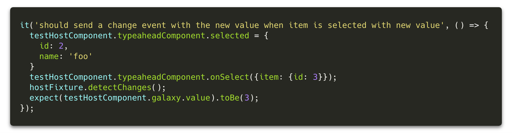We care that the formControl is being notified of the change when an option is selected.
Testing Touch Event (& validation)
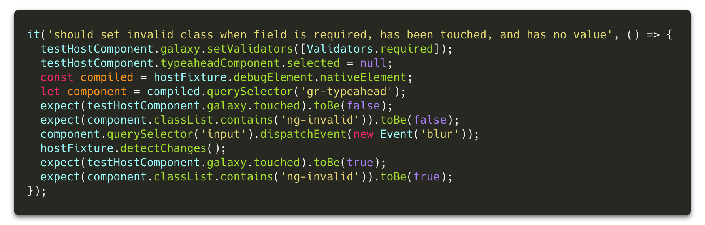We care that the formControl element is getting the ng-touched class and touched property true.
Testing setValue
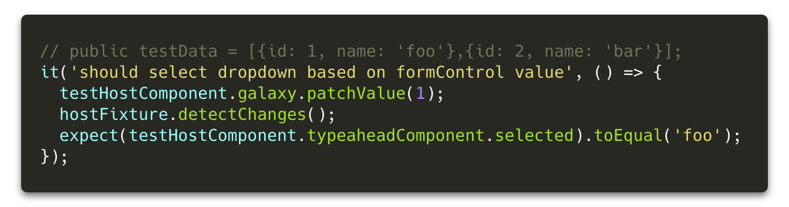We care that the ui selects the appropriate dropdown when writeValue is called.
Testing Rating Change Event
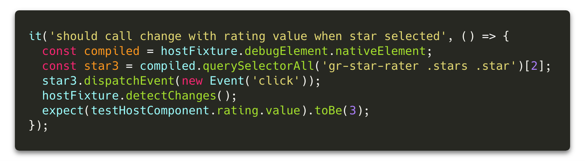We care that the formControl is being notified of the change when a star is clicked.
Testing Rating Disabling
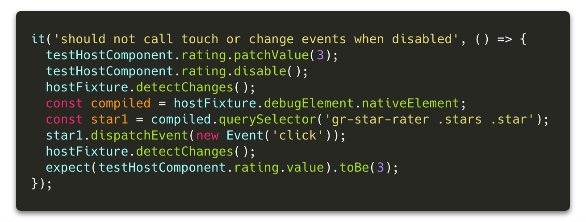We care that component implements "disabled" functionality correctly.
Key Concepts
- CVA is great for granular control of displaying
to the UI & communicating with the forms API - Keep your wrapper components dumb.
- Just input and output form values!
- Leave validation logic to the parent form component.
- CVA can be used with any form API
- including template driven
Questions?

Slides available at: tehfedaykin.github.io/WormholesandCVAs
Galaxy Rating App: https://github.com/tehfedaykin/galaxy-rating-app
VS Code theme - SynthWave '84 by Robb Owen